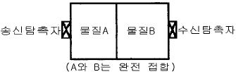
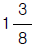
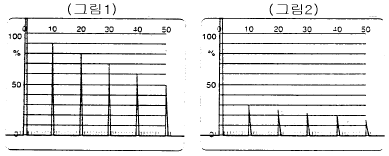
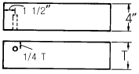
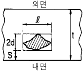

초음파비파괴검사기사(구) (2003-05-25 기출문제)
1과목: 초음파탐상시험원리
1. 초음파탐상시험시 불연속에서 반사되어 나온 에너지의 변화와 무관한 인자는?
- 불연속의 크기
- 불연속의 방향
- 불연속의 형태
- 불연속의 시간
(정답률: 알수없음)

2. 그림과 같은 투과법을 이용한 초음파탐상시험시 수신되는 음압이 가장 큰 물질로 조합된 것은?

- 물질A : 음향임피던스 10㎏/m2.s, 물질B : 음향임피던스 1㎏/m2.s
- 물질A : 음향임피던스 9㎏/m2.s, 물질B : 음향임피던스 2㎏/m2.s
- 물질A : 음향임피던스 8㎏/m2.s, 물질B : 음향임피던스 3㎏/m2.s
- 물질A : 음향임피던스 7㎏/m2.s, 물질B : 음향임피던스 4㎏/m2.s
(정답률: 알수없음)
3. 음향방출시험에서 음향방출기구와 가장 관계가 먼 것은?
- 소성변형
- 상변태
- 탄성변형
- 전위의 이동
(정답률: 알수없음)
4. 두께 1.5인치인 17ST 알루미늄판을 탐상코자 한다. 45° 횡파를 사용한다면 입사각을 몇 도로 하여야 하는가? (단, 17ST 알루미늄의 횡파속도는 0.310cm/μsec이고, 물에서 종파의 속도는 0.149cm/μsec 이다.)
- 7.62°
- 9.55°
- 19.87°
- 28.73°
(정답률: 알수없음)
5. 초음파탐상시험에서 결함의 실체를 측정하는 방법에 대한 설명중 바른 것은?
- 산란파법은 결함으로부터 산란되어 오는 초음파를 취해 결함의 형상을 표시하는 방법이다.
- 단부에코법은 결함의 단부의 에코가 최대일 때 빔 진행 거리와 굴절각으로부터 기하학적 계산에 의해 결함 높이를 구하는 방법이다.
- 주파수분석법은 결함에코를 주파수분석하여 그 중심 주파수로부터 결함의 위치를 구하는 방법이다.
- 표면파법은 결함의 종류를 추정하는 방법이다.
(정답률: 알수없음)
6. 초음파의 진동수가 일정하다면 어떤 파가 거친 입자의 물질내에서 가장 투과력이 큰가?
- 종파
- 횡파
- 표면파
- 고저파
(정답률: 알수없음)
7. 다음 중 초음파탐상시험법에 속하지 않는 것은?
- 투과법
- 공진법
- 펄스반사법
- 코일법
(정답률: 알수없음)
8. 투과법에 쓰이는 탐촉자를 선정시 송신효율과 수신효율이 가장 효과적이 되도록 바르게 짝지어진 것은?
- 티탄산 바륨 / 황산리튬
- 티탄산 바륨 / 니오비옴산 납
- 황산리튬 / 수정
- 황산리튬 / 티탄산 바륨
(정답률: 알수없음)
9. 다음 재료 중에서 초음파의 감쇠현상이 가장 심하게 일어나는 것은?
- 알루미늄 주조물
- 마그네슘 주조물
- 탄소강 주조물
- 구리 주조물
(정답률: 알수없음)
10. 초음파를 저강도 초음파와 고강도 초음파로 구별할 때 다음 중 무엇으로 결정하는가?
- 진폭
- 속도
- 파장
- 주파수
(정답률: 알수없음)
11. 다음 중 초음파의 발생 원리는?
- 자기수축 현상
- 간섭현상
- 제동효과
- 붕괴현상
(정답률: 알수없음)
12. 초음파 두께 측정기로 구리를 측정하니 10mm 였다. 이 측정기로 다른 조건은 변경하지 않고 알루미늄을 측정하면 측정기의 지시치는 얼마로 나타나겠는가? (단, 알루미늄과 구리의 실제 두께는 모두 10mm, 구리의 음속 = 4700m/sec, 알루미늄의 음속 = 6300m/sec)
- 7.5mm
- 10mm
- 13.4mm
- 15.0mm
(정답률: 알수없음)
13. 초음파 진동자는 보통 압전재로 만들어졌다. 다음 중 어떠한 조건하에서도 압전 효과를 나타내지 않는 물질은?
- 황산리튬
- 티탄산바륨
- 수정
- A-니켈
(정답률: 알수없음)
14. 주어진 물질내에서의 음속은 아래에 열거된 사항 중 어느것에 기인하는가?
- 주파수
- 파장
- 물질의 특성
- 진동주기
(정답률: 알수없음)
15. 알루미늄판의 두께가 1cm일 때, 이것에서 종파의 속도가 6.40×105cm/s이라면 초음파의 기본공진 주파수는?
- 3.2×105Hz
- 4.3×105Hz
- 8.6×105Hz
- 6.4×105Hz
(정답률: 알수없음)
16. 탐촉자의 주파수는 무엇에 따라 변화하는가?
- 쐐기
- 진동자의 두께
- 계기로 부터의 펄스 반복비
- 접촉 매질
(정답률: 알수없음)
17. 음향 임피던스가 서로 다른 두 재질의 경계면에 초음파를 입사시켰을 경우 다음 중 맞는 것은?
- 입사한 초음파는 모두 반사한다.
- 입사한 초음파는 모두 흡수한다.
- 일부는 투과하고 일부는 반사한다.
- 모두 굴절된다.
(정답률: 알수없음)
18. 수정결정체를 Z와 Y축에 평행하고 X축에 수직으로 절단했다면 이는 어떤 결정체인가?
- Y절단 결정체
- Z단 결정체
- X절단 결정체
- XY절단 결정체
(정답률: 알수없음)
19. 투과법을 이용한 초음파탐상에서 불연속 검출이 가능한 최소 깊이 한계는?
- 수천분의 일 인치
- 1/4 인치
- 1 인치
- 4 인치
(정답률: 알수없음)
20. 초음파탐상시험시 미세한 불연속을 찾기 위한 조건으로 합당한 것은?
- 가능한한 낮은 주파수의 탐촉자 사용
- 관통법을 사용
- 가능한한 높은 주파수의 탐촉자 사용
- 크기가 작은 탐촉자 사용
(정답률: 알수없음)
2과목: 초음파탐상검사
21. 조강(bar steel)에 대한 초음파탐상시험시 탐상거리에 따라 적용시킬 수 있는 최적의 시험주파수가 달라진다. 일반적으로 적용되는 이들의 관계에 대한 기술로 잘못된 것은?
- 탐상거리가 30㎜ 이하일 때 10㎒가 적당하다.
- 탐상거리가 20 ∼ 150㎜ 범위일 때 5㎒가 적당하다.
- 탐상거리가 150 ∼ 250㎜ 범위일 때 3㎒가 적당하다.
- 탐상거리가 250㎜ 이하일 때 1㎒가 적당하다.
(정답률: 알수없음)
22. 펄스반사 초음파 탐상기에서 진동자를 작동시키는 전압을 만들어 내는 부분은?
- 증폭기
- 수신기
- 펄스발생기
- 동기장치
(정답률: 알수없음)
23. 댐핑상수(Damping Coefficient)가 1.2인 펄스에서 세번째 펄스의 강도는 첫번째 펄스의 강도를 기준하여 백분율로 나타내면 얼마인가?
- 약 48%
- 약 58%
- 약 69%
- 약 83%
(정답률: 알수없음)
24. 초음파탐상시험시 CRT상에 시험편 표면으로부터

인치 길이에 존재하는 불연속지시가 나타났다. 이 불연속은 다음의 어떤 대비시험편과 비교함이 제일 적합한가?- 탐상면 - 불연속간 거리가
 인치인 대비시험편
인치인 대비시험편 - 탐상면 - 불연속간 거리가
 인치인 대비시험편
인치인 대비시험편 - 탐상면 - 불연속간 거리가
 인치인 대비시험편
인치인 대비시험편 - 탐상면 - 불연속간 거리가
 인치인 대비시험편
인치인 대비시험편
(정답률: 알수없음)
25. 에코높이의 평가에 관한 다음 설명중 올바른 것은?
- F/BF라는 것은 결함에코 높이와 결함에코가 나올 때의 저면에코 높이와의 비로 결함의 크기에 관계없이 재료의 감쇠값이 일정하면 항상 일정한 값이 된다.
- F/BG를 이용하는 경우 건전부의 저면에코 높이를 조정하여도 동일 시험체에 대해 기계적으로 탐상하는 것은 불가능하다.
- F/BF, F/BG 모두 탐상면의 영향을 받지 않고 결함을 평가할 수 있다.
- F/BF를 이용하는 경우는 탐상면의 영향을 받기 때문에 이를 고려해야 한다.
(정답률: 알수없음)
26. 다음 중 초음파탐상시험시 일반 탐촉자로 시험이 어려운 것은?
- 일반 구조용강
- 오스테나이트 스텐레스강
- 용접 구조용강
- 구상 흑연주물
(정답률: 알수없음)
27. 음극선관(CRT) 상에 전기적인 지시가 발생하였다. 잡음의 원인을 바로 잡기 위하여 우선 취해야 할 조치는?
- 그 잡음지시는 전원 플러그에 의한 것이 확실하므로 플러그를 다른 것으로 바꾼다.
- 그 잡음지시는 전원 플러그의 오물 때문이므로 먼저 깨끗이 청소하여 사용한다.
- 그 잡음지시가 장비에 의한 것인지 시험편에 의한 것인지 먼저 확인한다.
- 그 잡음지시가 전원회로상의 문제이기 때문에 다른 전원 회로에 연결 사용한다.
(정답률: 알수없음)
28. 시험편방식으로 탐상감도를 조정하고 동일 두께 2장의 강판 A와 B를 수직탐상하였을 때 각각 그림1 및 그림2의 도형을 얻었다. 결함에코는 특히 발견되지 않았다면 다음 기술 중 올바른 것은?

- B는 A보다 조직이 조대하고 감쇠가 크다.
- B는 A보다 미소한 결함이 많다.
- B는 A보다 탐촉자의 접촉이 나쁘다.
- B는 A와 감쇠를 비교할 수 없다.
(정답률: 알수없음)
29. 경사각탐상에 있어서 탐촉자의 입사점을 중심으로 탐촉자를 회전시켜 용접선에 대한 초음파 빔(beam)의 방향을 변화시키는 주사법은?
- 진자주사
- 좌우주사
- 지그재그주사
- 목돌림주사
(정답률: 알수없음)
30. 단강품의 수직탐상에 대해 기술한 것이다. 올바른 것은?
- 임상에코가 높고 저면에코가 나타나지 않는 경우 탐상감도를 더 높게 한다.
- 임상에코가 높고 저면에코가 나타나지 않는 경우 탐상감도를 더 낮게 한다.
- 임상에코가 높고 저면에코가 나타나지 않는 경우 시험 주파수를 더 높게 한다.
- 임상에코가 높고 저면에코가 나타나지 않는 경우 시험 주파수를 더 낮게 한다.
(정답률: 알수없음)
31. 진동자 설계시 다음 중 최대의 감도(sensitivity)를 갖는 경우는?
- Q값이 작고 대역폭(band width)이 커야 한다.
- Q값이 크고 대역폭(band width)이 작아야 한다.
- 펄스폭과 댐핑상수(δ)가 커야 한다.
- 펄스콕과 댐핑상수(δ)가 작아야 한다.
(정답률: 알수없음)
32. 다음 중 초음파 탐상기 수신부에 부속되어 있는 기능은?
- rejection의 조정
- pulse 폭의 조정
- 측정범위의 조정
- 시간축의 조정
(정답률: 알수없음)
33. 다음 중 초음파탐상시험 방법에 속하지 않는 것은?
- 흡수법
- 공진법
- 투과법
- 펄스 반사법
(정답률: 알수없음)
34. 펄스반사식 초음파탐상기에서 동기회로 또는 시간조절회로는 탐상기의 무엇을 조정하는가?
- 펄스길이
- 게인
- 펄스 반복주파수
- 소인길이
(정답률: 알수없음)
35. 후판 용접부의 경사각탐상 등의 경우 2개의 경사각탐촉자를 용접부의 한쪽에서 전후로 배열하여 하나는 송신용, 하나는 수신용으로 하는 탐상방법은?
- 탠덤주사
- 두갈래주사
- 경사평행주사
- 전후주사
(정답률: 알수없음)
36. 후판의 라미네이션 결함 탐상에 효과적인 검사법은?
- 수직탐상법
- 경사각탐상법
- 표면파탐상법
- 탠덤탐상법
(정답률: 알수없음)
37. 강재의 음압감쇠계수가 20dB/m로 측정되었다면 50㎜두께의 알루미늄에서 펄스반사법에 의해 반사 펄스신호를 잡았을 때 두 인접한 신호의 진폭의 비는? (단, 경계면에서의 투과손실은 무시하고 측정기기에 나타난 신호는 진동자에 도달되는 음압에 비례한다고 가정)
- 1 : 0.5
- 1 : 0.6
- 1 : 0.8
- 1 : 1.5
(정답률: 알수없음)
38. 초음파탐상시험시 사용하는 표준시험편의 사용 목적으로 적절하지 않은 것은?
- 결함의 종류를 분류하기 위하여 사용한다.
- 탐상장치의 작동 특성을 알아보기 위해 사용한다.
- 탐상조건을 설정하기 위해 사용한다.
- 결함 에코의 높이와 위치를 비교 평가하기 위해 사용한다.
(정답률: 알수없음)
39. 두께 60mm의 알루미늄 판에 큰 결함이 탐상표면으로부터 30mm 깊이에 탐상표면과 평행하게 결함이 존재할 때 가장 적합한 탐상방법은?
- 수직 탐상법
- 경사각 탐상법
- 표면파 탐상법
- 판파 탐상법
(정답률: 알수없음)
40. 다음 중 STB-A1 시험편에 존재하지 않는 것은?
- 반지름 100mm인 원주면
- 직경 50mm인 구멍
- 직경 1.5mm인 관통구멍
- 직경 8mm인 관통구멍
(정답률: 알수없음)
3과목: 초음파탐상관련규격및컴퓨터활용
41. KS B 0896에서 규정한 탠덤탐상의 적용 판두께 범위는?
- 10mm이상
- 20mm이상
- 30mm이상
- 40mm이상
(정답률: 알수없음)
42. KS B ⑤34에서 분해능 시험편으로 사용하지 않는 것은?
- RB-RA
- RB-RB
- RB-RC
- RB-RE
(정답률: 알수없음)
43. KS B 0896에 따라 강용접부를 탐상할 때 transfer method에 따른 수정조작을 허용하고 있는데 다음 중 이 방법은 어느 것인가?
- 시험편에 비하여 시험체의 표면이 거칠어 감쇠차가 있을 때 탐상감도를 수정키 위해 행하는 조작
- 종파가 시험체 내부를 진행하다 경사면에서 횡파로 바꾸어짐으로써 나타나는 시간축상의 측정범위를 수정키 위해 행하는 조작
- 입사각이 어느 일정각을 초과할 때 제1, 제2 임계 입사각이 나타나는데 이 임계각을 결정키 위해 행하는 조작
- 시험체 탐상 표면과 접촉매질 사이에 서로 다른 음향 임피던스를 같게 하기 위하여 행하는 조작
(정답률: 알수없음)
44. 전자우편을 이용할 때 사용자의 컴퓨터에서 다른 시스템에 도착한 전자우편을 볼 수 있도록 하는 프로토콜은?
- POP3
- SMTP
- NMTP
- HTTP
(정답률: 알수없음)
45. ASME Sec.V, Art.5에서 DAC를 이용하여 탐상할 때, DAC를 점검하여 원래 작성된 곡선에서 진폭이 최소 얼마나 감소되었을 때 모든 작업사항을 재검사하여야 하는가?
- 20 % 또는 2dB 감소
- 30 % 감소
- 50 % 또는 3dB 감소
- 10 % 감소
(정답률: 알수없음)
46. ASME Sec.V, Art.5에 따라 초음파탐상검사시 시험편의 곡률반지름이 100mm일 때, 사용되어질 수 있는 보정블록의곡률 반지름으로 맞는 것은?
- 80mm
- 120mm
- 200mm
- 250mm
(정답률: 알수없음)
47. 인터넷 상에서 사용자가 원하는 키워드를 입력하여 사이트를 찾고자 할 때 사용할 프로그램은?
- 즐겨찾기
- 검색엔진
- 목록보기
- 인터넷옵션
(정답률: 알수없음)
48. AWS D.1.1에서 사용하고 있는 여러 가지 시험편 중 경사각 탐촉자의 굴절각 측정에 사용하는 것은?
- RB형 시험편
- DS형 시험편
- RC형 시험편
- IIW형 시험편
(정답률: 알수없음)
49. KS B 0896에서 규정된 진동자의 공칭치수가 20×20mm이고, 굴절각이 70° 일 때 접근한계거리는?
- 25mm
- 30mm
- 15mm
- 18mm
(정답률: 알수없음)
50. 굴절각이 75° 인 경사각 탐촉자로 굴절각을 측정하려 할때 STB-A1 표준 시험편에서 사용되는 구멍은?
- ø1
- ø1.5
- ø4
- ø50
(정답률: 알수없음)
51. 그림에 제시된 시험편의 이름은?

- ASME 경사각빔용 교정시험편
- ASTM 표준시험편
- IIW 표준시험편
- G형 감도 표준시험편
(정답률: 알수없음)
52. 인터넷의 개념과 관련이 없는 것은?
- 수많은 사람이나 기관과 연결할 수 있는 개방구조이다.
- 독자적인 주소를 할당받는다.
- 전세계 통신망들이 합쳐진 네트워크의 네트워크이다.
- 단일 운영체제로 연결된 네트워크 통신망이다.
(정답률: 알수없음)
53. KS D 0040에서 규정한 결함분류중 틀린 것은?
- 수직탐촉자를 사용한 경우 50% ＜ F ≤ 100%일 때는 표시 기호가 △이다.
- 수직탐촉자를 사용한 경우 B1 ≤ 50%일 때는 표시 기호가 X이다.
- 2진동자 수직탐촉자를 사용한 경우 DM선을 초과한 것은 표시 기호가 X이다.
- 2진동자 수직탐촉자를 사용한 경우 DL선 초과 DM선 이하일 경우 표시 기호가 ○이다.
(정답률: 알수없음)
54. 윈도우 운영체제에서 디스크의 단편화를 제거하기 위한 목적의 프로그램은?
- 디스크 검사
- 디스크 정리
- 디스크 조각모음
- 디스크 공간 늘림
(정답률: 알수없음)
55. KS D 0250(강관의 초음파탐상 검사방법)에 따라 경사각 탐상시 인공 홈으로 사용하지 않는 것은?
- 각 홈
- V 홈
- 드릴 구멍
- 평저공
(정답률: 알수없음)
56. 다음의 서버에 대한 설명이 잘못된 것은?
- SMTP 서버 : 메일러로부터 전자우편을 받아서 상대방의 SMTP 서버로 보낸다.
- FTP 서버 : 파일의 송수신을 지원한다.
- Proxy 서버 : 특정 조식의 랜과 외부 네트워크 사이에서 방화벽 역할을 수행하며, 동시에 여러 외부 서버의 데이터를 대신 받아주는 역할을 한다.
- Gopher 서버 : 원격 시스템 접속을 지원한다.
(정답률: 알수없음)
57. KS B ⑤35에는 진동자의 치수에 대하여 특별히 지시가 없는 경우의 공칭치수를 나열해 놓았다. 다음 중 이에 해당되지 않는 원형진동자의 공칭치수(mm)는?
- 3
- 5
- 7
- 10
(정답률: 알수없음)
58. KS B 0896의 규정에 의한 원둘레이음 용접부의 검사를 위한 대비 시험편은?
- RB-A4
- RB-A5
- RB-A6
- RB-A9
(정답률: 알수없음)
59. KS B 0817에서 초음파 탐상기의 조정은 실제로 사용하는 탐상기와 탐촉자를 조합한 후 전원 스위치를 켜고나서 최소 몇 분이 경과한 후 하도록 규정하는가?
- 30분
- 15분
- 10분
- 5분
(정답률: 알수없음)
60. ASME Sec.XI의 보일러 및 압력용기에 관한 초음파탐상시 결함지시의 평가는 그림과 같이 결함을 직(정)사각형으로 이상화하고, 크기는 길이(ℓ ), 높이(2d), 표면에서 떨어진 거리(S)에 의해 결정된다. t = 130mm, S = 2mm, 2d = 18mm, ℓ = 40mm일 경우, 이 결함지시의 a/ℓ , a/t는? (단, ⅰ) 0.4d ≤ S 이면 ⇒ a = d이고, ⅱ) 0.4d ＞ S 이면 ⇒ a = 2d + S이다.)

- a/ℓ =0.5, a/t=0.15(15%)
- a/ℓ =0.23, a/t=0.069(6.9%)
- a/ℓ =0.5, a/t=0.069(6.9%)
- a/ℓ =0.23, a/t=0.15(15%)
(정답률: 알수없음)
4과목: 금속재료학
61. 고력황동의 조직으로 맞는 것은?
- δ + α
- α + σ
- α + β
- β + γ
(정답률: 알수없음)
62. 피검면의 상황을 셀루로이드피막에 옮겨서 이것을 현미경으로 검사하는 방법은?
- EDT 법
- IMPULES 법
- UT - NDT 법
- SUMP 법
(정답률: 알수없음)
63. 주물용 Aℓ 청동에 대한 설명 중 틀린 것은?
- 고력황동을 사용해서 만든 프로펠러 보다 중량을 10∼20% 가볍게 할 수 있다.
- 내해수성이 좋아 대형 프로펠러를 만들수 있다.
- 경도, 내마모성이 나쁘다.
- 화학 공업장치 분야에 사용된다.
(정답률: 알수없음)
64. 귀금속에 속하지 않는 것은?
- 철
- 금
- 은
- 백금
(정답률: 알수없음)
65. 와이(Y)합금을 올바르게 설명한 것은?
- Aℓ -Zn 합금에 소량의 Mg 과 Mn을 첨가한 내열성합금
- Aℓ -Cu 합금에 소량의 Mg 과 Ni를 첨가한 내열성합금
- Aℓ -Si 합금에 소량의 Mg 과 Pb을 첨가한 내열성합금
- Aℓ -Fe 합금에 소량의 Mg 과 Sn을 첨가한 내열성합금
(정답률: 알수없음)
66. 열전대로 사용되는 Alumel 이란 어느 계통의 합금인가?
- Ni-Aℓ -Fe 합금
- Aℓ -Cr-Co 합금
- Ni-Mg -Cu 합금
- Aℓ -Mn-Pb 합금
(정답률: 알수없음)
67. 마우러 조직도(maurer diagram)란?
- 주철에서 C 와 Si 양에 따른 주철의 조직 관계
- 주철에서 C 와 P 양에 따른 주철의 조직 관계
- 주철에서 C 와 Mn 양에 따른 주철의 조직 관계
- 주철에서 C 와 S 양에 따른 주철의 조직 관계
(정답률: 알수없음)
68. Fe3C의 금속간 화합물에 있어서의 탄소의 원자비는?
- 25%
- 40%
- 60%
- 85%
(정답률: 알수없음)
69. 활자(Type metal)합금은?
- Cu-Sb-Zr
- Fe-Zn-Sb
- Pb-Sb-Sn
- Al-Se-Zn
(정답률: 알수없음)
70. 아연의 성질을 올바르게 설명한 것은?
- 주조상태에서는 조대결정이 되므로 연신이 낮고 취약 하여 상온가공이 어렵다.
- 체심입방격자이며 고온에서 증기압이 낮다.
- 건조한 공기중에서는 산화가 잘되며 산, 알칼리에 강하다.
- Fe가 0.008% 이상이 되면 연질의 FeZn7상이 나타나 인성과 인장강도를 증가시킨다.
(정답률: 알수없음)
71. 스프링강으로 가장 적당한 조직은?
- 페라이트
- 오스테나이트
- 솔바이트
- 시멘타이트
(정답률: 알수없음)
72. 델타 메탈(delta metal)의 설명이 틀린 것은?
- 주물이나 단조재로 사용되며 고온가공성이 양호하다.
- 6:4 황동에 1% 내외의 Fe 가 포함된 것이다.
- Cu 54∼58%, Sn 40∼43%, Mg 1% 이내의 합금이다.
- 내식성이 우수하므로 선박, 광산, 수력기계, 화학 기계 볼트 너트 등에 사용된다.
(정답률: 알수없음)
73. Ti 제련시 사염화티타늄(TiCl4)을 환원하여 스폰지(sponge)티탄을 얻는데 사용하는 환원제는?
- Aℓ
- Mg
- Cu
- Si
(정답률: 알수없음)
74. 열처리 목적에 적합하지 않는 것은?
- 조직을 연화시키거나 기계가공에 적합한상태로 한다.
- 조직을 조대화시키고 방향성을 크게하며 편석을 많게 한다.
- 냉간가공 후 나쁜 영향을 제거한다.
- 조직을 안정화시키고 내식성을 개선시킨다.
(정답률: 알수없음)
75. Silumin의 개량 처리법에 있어서 미량의 Na 첨가에 대한 설명 중 가장 옳은 것은?
- 과냉현상과 결정성장의 저지에 의한다.
- 융체화 처리에 따른 공공(vacancy)의 형성에 의한다.
- 풀림에 따른 응고핵발생수의 증가에 의한다.
- 풀림 처리에 따른 결정립성장에 의한다.
(정답률: 알수없음)
76. 석출경화형 스테인리스강인 것은?
- SS 형
- RS 형
- EF 형
- PH 형
(정답률: 알수없음)
77. 자석강이 아닌 것은?
- NKS강
- Koster강
- MK강
- Vanity강
(정답률: 알수없음)
78. 세라다이징(sherardizing)은 어느 금속을 철강제품의 표면에 확산 피복시킨 것인가?
- Cr
- Aℓ
- Si
- Zn
(정답률: 알수없음)
79. 탄소강에서 상온취성(cold shortness)의 원인이 되는 원소는?
- 황(S)
- 인(P)
- 규소(Si)
- 망간(Mn)
(정답률: 알수없음)
80. 서브 제로(sub-zero)에 대한 설명 중 맞지 않는 것은?
- 0℃이하의 온도에서 냉각시키는 조작이다.
- 마텐자이트변태를 중지시키기 위한 것이다.
- 마텐자이트변태를 진행시키기 위한 것이다.
- 심냉처리라고도 한다.
(정답률: 알수없음)
5과목: 용접일반
81. 서브머지드 아크용접시 아크의 길이가 길어지면 어떤 현상이 일어나는가?
- 용입이 얕고 폭이 넓어진다.
- 오버랩이 발생한다.
- 용입이 깊어진다.
- 용접비드가 좁아진다.
(정답률: 알수없음)
82. 탄산가스 용접시 와이어 돌출길이가 적당해야 용접이 잘된다. 용접전류 200[A] 미만일 때 다음 중 몇 mm 정도면 적당한가?
- 5 ∼ 7
- 10 ∼ 15
- 20 ∼ 25
- 25 ∼ 30
(정답률: 알수없음)
83. 아크전류가 300A 아크전압이 25V 용접속도가 20cm/min인 경우 용접길이 1cm당 발생되는 용접입열은 몇 J/cm인가?
- 20000
- 22500
- 25500
- 30000
(정답률: 알수없음)
84. 강 용접물의 용접 변형에 영향을 주는 것이 아닌 것은?
- 용접입열
- 강의 상변태
- 용착량
- 용접결함
(정답률: 알수없음)
85. 용접봉 용제(Flux)의 종류에 따라서 용접금속의 충격치가 다르다. 다음중 그 값이 가장 우수하게 나오는 계(系)는 어느 것인가?
- 일미나이트계(ilmenite계)
- 산화철계(酸化鐵系)
- 티타니아계(titania계)
- 저수소계(低水素系)
(정답률: 알수없음)
86. 다음 설명 중 저수소계 용접봉의 특징이 아닌 것은?
- 탄산칼슘(CaCO3), 불화칼슘(CaF2)이 주성분이다.
- 아크에 탄산가스 분위기를 주어 용착금속에 용해되는 수소량을 적게 한다.
- 용착 금속은 기계적성질, 내균열성이 우수하다.
- 아크가 안정되어 작업성이 우수하다.
(정답률: 알수없음)
87. 산소-아세틸렌 가스 절단시 절단조건으로 설명이 잘못된것은?
- 모재 중 불연소물이 적을 것
- 슬랙의 유동성이 좋고 쉽게 이탈할 것
- 모재의 연소온도가 용융온도보다 높을 것
- 슬랙의 용융온도가 모재의 용융온도보다 낮을 것
(정답률: 알수없음)
88. 다음 중 아크 특성에 관한 설명 중 틀린 것은?
- 음극구역 전압강하는 양극구역 전압강하보다 많이 일어난다.
- 아크의 특성은 용접봉의 조성, 보호가스 등에 관계없이 일정하다.
- 양극과 음극사이의 아크 간격이 길어지면 전압강하는 증가한다.
- 양극구역 전압강하는 아크 길이 및 전류에 관계없이 거의 일정하다.
(정답률: 알수없음)
89. 현장에서 많이 사용하고 있는 일반적인 용해 아세틸렌에 대한 설명 중 틀린 것은?
- 발생기 아세틸렌에 비하여 불안정하다.
- 일정온도 이상이 되면 산소가 없어도 폭발한다.
- 아세틸렌가스를 아세톤에 용해시킨것이다.
- 발생기 아세틸렌보다 고순도이다.
(정답률: 알수없음)
90. 용접부를 피닝하는 주목적으로 가장 적합한 것은?
- 모재의 재질을 검사한다.
- 미세한 먼지 등을 털어 낸다.
- 응력을 강하게 하고 변형을 크게 한다.
- 용접부의 잔류응력을 완화하고 변형을 방지한다.
(정답률: 알수없음)
91. 피복 금속 아크용접봉의 용융속도에 관한 설명 중 잘못된것은?
- 아크 전류에 비례한다.
- 아크 전압에 비례한다.
- 같은 전류의 경우 봉의 크기와 무관하다.
- 심선이 같더라도 피복제에 따라 다르다.
(정답률: 알수없음)
92. 일반적인 불활성가스 아크용접에 속하지 않는 것은?
- TIG 아크용접
- 알곤 아크용접
- 캐스케이드 아크용접
- MIG 아크용접
(정답률: 알수없음)
93. 용접기의 1차 입력이 20kVA 이고 전원 전압이 200V일 때, 용접기 1차측 안전 스위치로 가장 적합한 것은?
- 100A
- 10A
- 5A
- 0.1A
(정답률: 알수없음)
94. 아세틸렌 가스에 대한 설명 중 틀린 것은?
- 공기보다 가볍다.
- 순수한 아세틸렌 가스는 무색 기체이다.
- 불순물인 황화수소 등을 포함하고 있어 악취가 난다.
- 물에는 25배정도 용해되어서 용해 아세틸렌으로 만들어 용접에 이용되고 있다.
(정답률: 알수없음)
95. 가스용접에서 좌(전)진법에 대한 설명으로 틀린 것은?
- 용접속도는 우진법에 비하여 느리다.
- 소요 홈각도는 우진법에 비하여 작다.
- 용접 변형은 우진법에 비하여 크다.
- 열 이용률은 우진법에 비하여 나쁘다.
(정답률: 알수없음)
96. 플라스마 제트 용접의 특징 중 틀린 것은?
- 열에너지의 집중이 좋다.
- 용접속도가 빠르다.
- 맞대기 용접에서 모재 두께의 제한을 받지 않는다.
- 각종 재료의 용접이 가능하다.
(정답률: 알수없음)
97. 용접 제품에서 잔류응력의 영향이 아닌 것은?
- 취성파괴의 원인이 된다.
- 응력부식의 원인이 된다.
- 박판 구조물에서는 국부 좌굴을 촉진한다.
- 사용 중에는 변형의 원인은 되지 않는다.
(정답률: 알수없음)
98. 아크용접 작업에서 아크시간이 7분, 휴식시간이 3분이라 할 때 실제 사용률(duty cycle)은 몇 % 가 되는가?
- 30
- 43
- 70
- 93
(정답률: 알수없음)
99. 저수소계, 일미나이트계, 티탄계, 고산화철계 용접봉의 용접성에 대한 설명으로 틀린 것은?
- 내균열성은 피복제의 염기도가 높을수록 양호하다.
- 작업성은 피복제의 염기도가 높을수록 향상된다.
- 내균열성은 저수소계가 가장 좋다.
- 티탄계는 내균열성은 가장 나쁘다.
(정답률: 알수없음)
100. 다음의 용접법 중에서 전기적인 아크(Arc)에너지를 이용하는 것은?
- 테르밋 용접
- 플라즈마 용접
- 일렉트로슬래그 용접
- 프로젝션 용접
(정답률: 알수없음)